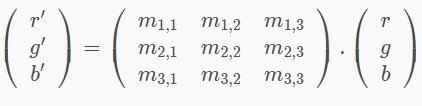
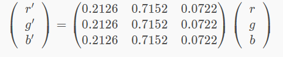

Principe
Un pixel couleurs p est représenter par un triplet de trois composantes chromatiques :les trois couleurs(r,g,b)
Pour appliquer un filtre a une image il faut donc appliquer une transformations à ces trois composantes, on appelleras les composantes chromatiques de p' (r',g',b')
il faut donc disposé de 9 coefficient pour calculer p' cette transformation est sous la forme : r'=a0xr+a1xg+a2xb
g'=b0xr+b1xg+b2xb
b'=c0xr+c1xg+c2xb
On peut représenter ces calculs a l'aide d'une multiplication matricielle :

Exemple : Voici la matrice de coefficient utilisé pour transformer une image couleur en une image en noir et blanc

ATTENTION:
si la somme des coefficients d'une ligne de la matrice est supérieur a 1 alors
il faut fixer toute valeur au dessus de 255 à 255 et toute valeur négative à 0 pour éviter de sortir de l'intervalle [0,255]